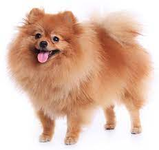

Pomeranian Dog
- 1. Pomeranians are descendants of larger sled and working dogs from the Arctic regions.
- 2. They are named after the Pomerania region, which is now part of Poland and Germany.
- 3. Despite their small size, Pomeranians have a bold, intelligent, and lively personality.
- 4. Pomeranians have a double coat of fur that's dense and plush, coming in various colors.
- 5. Their thick double coat sheds profusely, requiring regular grooming.